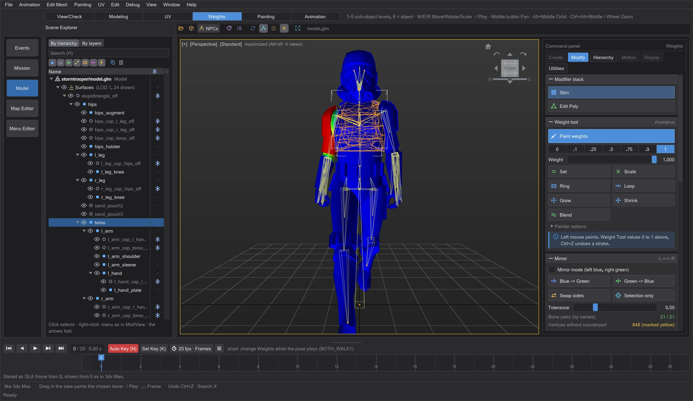
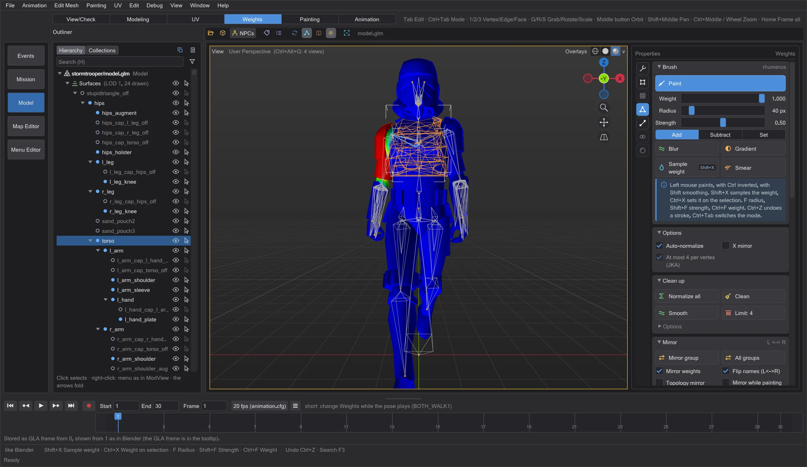
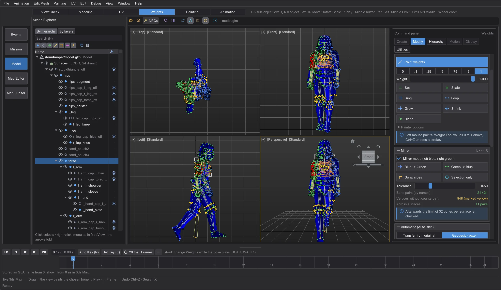

Model tab: Weights
Paint and edit the bone weights of a model while the animation keeps running - with the tools of 3ds Max or of Blender, depending on the control mode. Mirror one side to the other across surfaces, lock bones, and see at any time whether the model fits the limits of the game.
The panel on the right#
Pick a bone in the scene explorer or in the group Bone; the model then shows its weights from blue (0) to red (1), and the bones are visible. Like 3ds Max the command panel shows on the Modify tab the groups Modifier stack, Weight tool, Mirror, Automatic (Auto-skin), Bone, JKA limits and, closed, Advanced parameters. Like Blender the properties editor shows on the Data tab Brush, Options, Clean up, Mirror, Automatic (Auto-skin), Bone and JKA limits. Every function is also in the search of all actions (X, F3 like Blender) and in the right-click of the view under Weight tools.


Painting#
The main button Paint weights (like Blender: Paint) switches painting on and off. On, the left mouse button paints the weight of the picked bone; off, it selects - vertices at vertex level (1) - for the tools that work on a selection. The brush adds, subtracts, smooths or sets the weight; like Blender there are also Gradient (drag a line: full weight at its start, nothing at its end, linear or radial) and Smear (drags the weights along with the brush). Like 3ds Max these and radius, strength and mirroring while painting are under Painter options. With Auto-normalize (like 3ds Max: Normalize, on from the start) the weights of a vertex always add up to 1: the painted bone keeps its value and the others share the rest. One stroke is one undo step.
In Blender mode the keys of Blender's weight paint apply: a stroke with Ctrl subtracts, with Shift it smooths; Shift+X samples the weight under the mouse (Sample weight), Ctrl+X sets it on the selection; F, Shift+F and Ctrl+F drag radius, strength and weight - a click confirms, Esc or a right-click cancels.
Weight tool and clean-up#
Like the Weight Tool of 3ds Max: with painting off, the fixed values 0 to 1 set the weight of the picked bone on the selected vertices at once; Scale multiplies it by the scale factor (0.95 from the start), Blend evens the selected vertices out with their neighbours, and Ring, Loop, Grow and Shrink extend or reduce the selection (ring and loop run over quads; a mesh of triangles is paired into quads for that without changing the model). The clean-up commands of Blender - Normalize all, Clean, smoothing all bones and Limit: 4 - act on every vertex, or on the selected ones when vertices are selected; like 3ds Max they are in Advanced parameters as Normalize all, Remove zero weights and Bone affect limit: 4. Vertices at the same place - at a UV seam or where two surfaces meet - always get the same weights, so the mesh does not tear when it moves.
Vertices like the Skin modifier of 3ds Max: the group Weight tool has *Select: Vertices, Select Element, Backface Cull Vertices*; click or drag vertices, Ctrl adds, Alt removes. Its list shows each bone with the weight of the selected vertices (the average for several); click a bone and type a value or use .1/.25/.5/.75/.9/1 - the sum stays 1. Copy, Paste and Paste-Pos copy weights between vertices, the Weight Table (dockable) lists vertices × bones, and Mirror Paste copies the selected vertices to the other side with left and right bones swapped; the pairs stand under Bone pairs - pick another partner in a row's list or pair any two bones in the last row (e.g. Bip01 L Hand), Pairs from names goes back to the names. Like Blender the panel Vertex Weights shows the same list. Paint weights remains one tool among them; saving keeps the format of the game (4 weights, 10 bits).
Mirroring#
Bones are paired by their names (lhumerus and rhumerus), vertices by their place, across surfaces - in JKA the left and the right arm are surfaces of their own. The table of the group shows the bone pairs, the vertices without a counterpart and the surfaces that mirror each other; Tolerance says how far a counterpart may lie from the mirrored place. Like 3ds Max, Mirror mode (left blue, right green) marks the vertices in the view (yellow: no counterpart), Blue -> Green and Green -> Blue copy one side to the other, Swap sides swaps them, and Selection only limits all three to the selected vertices. Like Blender, Mirror group mirrors the picked bone and All groups all bones, with Mirror weights and Flip names (L<->R): without a vertex selection both sides swap, with one the selected side receives the other. Topology mirror finds the counterparts by the structure of the mesh when its halves are built alike but do not lie exactly alike. After mirroring the message names a surface that now uses more bones than the game reads (32).

Bone, locks and the limits of the game#
The group Bone shows the picked bone and the pose (sequence and frame); the animation keeps running while you work. Lock locks the picked bone: no brush and no command changes its weights, and normalising works around it. Locked bones are listed with an x to unlock them; Locks (like Blender: K) opens the menu to lock or unlock all bones, the picked one or all others. Show bones switches the bones in the view; in this area they are on from the start. The group JKA limits shows as bars what the game reads: vertices and bones per surface (of the selected surface, otherwise of the one closest to the limit) and the most weights on a vertex. Apply (4 weights, normalized) writes the painted weights into the model as the game reads them: the four largest, normalised, in 10 bits.
Saving, level of detail and Ctrl+Z while painting#
Saving writes the weights the view shows, also while paint lists are open (after painting or a command of this area, before Apply (4 weights, normalized)): the file gets the four weights per vertex that the pose shows, normalized like the game reads them, and the paint lists stay open for further painting. The check before saving and the JKA limits in Modeling measure the same. With Selected surfaces only and Mirror afterwards, Auto-Skin mirrors only into the selected surfaces: to mirror one arm onto the other, select both.
Painting and the commands of this area apply to the level of detail shown (with Auto it follows the zoom); the other levels keep their weights - only Auto-Skin weights all levels. While a stroke, a gradient, a drag or a tool box is open, the view keeps the level it began in, even if the wheel zooms; the new level follows when you let go. A selection of vertices, edges or polygons belongs to its level: after a change of level it is empty, and it is back when the view returns to that level and its mesh was not changed in between (painting weights does not count). Ctrl+Z with the mouse button held ends the open stroke, gradient or drag and takes it back; Ctrl+Y brings it back.